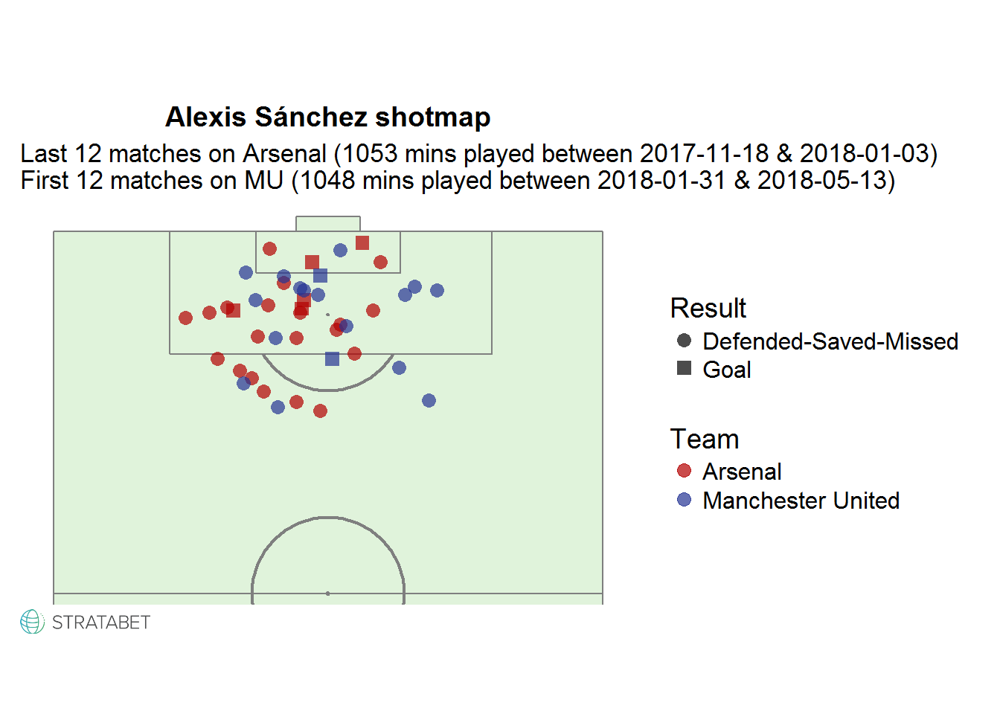

Jugando con los datos proporcionados por StrataBet junto con la librería ggsoccer de Ben Torvaney para R, armé mi primer Shotmap (!!) dedicado a Alexis Sánchez
Datos
En total consideré 24 partidos de Premier League con el fin de comparar los 12 que Alexis ha jugado a la fecha en Manchester United con los 12 últimos que jugó en Arsenal. Así es como se tienen cantidades de minutos jugados muy similares para cada caso.
En relación a los tiros, se consideraron todos los efectuados desde “juego abierto”, despreciando pelotas paradas.
Gracias a la librería ggsoccer es posible dibujar la cancha para ubicar los tiros, sin embargo es necesario hacer una conversión de las coordenadas re escalando los valores tanto para el eje X como Y ya que los datos no vienen en el mismo sistema que la herramienta utilizada.
Por otro lado, además de la ubicación de los tiros, el mapeo de datos para la visualización contempla el color para los equipos y la forma para el resultado del tiro: Gol o No gol (atajado, desviado, bloqueado).

Observaciones
En Arsenal en general Alexis disparaba más: 25 de 43 chances: 58%
En Arsenal también resalta la cantidad de remates desde el sector izquierdo del ataque, incluso fuera del área, además de una mayor cantidad de goles (5).
En Manchester United se observa un juego ofensivo más centralizado, con menos remates desde fuera del área y menos goles, hasta ahora.
¿Esto es debido a la influencia del juego más defensivo de Mou? ¿El periodo de adaptación?
This article was written with the aid of StrataData, which is property of Stratagem Technologies. StrataData powers the StrataBet Sports Trading Platform, in addition to StrataBet Premium Recommendations.